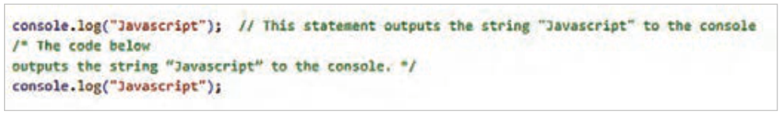

واکنش به کلیک، حرکت ماوس یا فشردن کلیدهای صفحهکلید توسط چه زبانی برنامهنویسی میشود؟
بازیهای ساده، اسلایدر تصاویر و منوهای بازشونده توسط چه زبانی ساخته میشوند؟
چگونه میتوان با کلیک روی یک دکمه، عملی را اجرا نمود؟
آیا امکان دسترسی به عناصر صفحه و تغییر محتوا و ویژگیهای آنها وجود دارد؟
آیا میتوان بدون بار گذاری دوباره صفحه، محتوای آن را تغییر داد؟
چگونه میتوان اعتبار اطلاعات وارد شده در فرم را پیش از ارسال بررسی نمود؟
محاسبات عددی و پردازش رشتههای ورودی کاربر چگونه انجام میشود؟
در پایان از هنرجو انتظار میرود
با استفاده از متغیرها، عملگرها و ساختارهای کنترلی، منطق موردنیاز برنامه را پیادهسازی کند.
نحوه تعریف وظایف تکراری را در قالب توابع بداند و از توابع داخلی جاوااسکریپت برای انجام سریعتر کارها استفاده نماید.
با استفاده از انتخابگرهای DOM، محتوا و ویژگیهای عناصر HTML را در پاسخ به رویدادهایکاربر تغییر دهد.
ورودیهای کاربر را در فرمها اعتبارسنجی کرده و در صورت وجود خطا، پیام مناسب نمایش دهد.
استاندارد عملکرد
بتواند با استفاده از Java Script بهصورت بهینه و امن، رفتارهای پویا و تعاملی را به صفحات وب اضافه کند و خروجی نهایی را در مرورگرهای مختلف اجرا کند.
صفحه ۱۹۳
تعریف جاوااسکریپت
در پودمان دوم، بخشهایی از صفحه اول یک فروشگاه اینترنتی با استفاده از HTML و CSS طراحی شد. این بخشها ماهیتی ایستا دارند و فاقد قابلیت تعامل با کاربر هستند؛ به این معنا که نمیتوانند در ازای ورودیهای کاربر (مانند کلیک یا تایپ) واکنش مناسبی (مانند نمایش پیام یا تغییر محتوا) ارائه دهند. در واقع HTML ساختار و محتوای صفحه وب را تعریف میکند و CSS سبک نمایش عناصر صفحه را تعیین میکند. برای تبدیل ساختار و ظاهر ایستای صفحه به یک تجربه کاربری پویا، تعریف رفتار و منطق صفحه ضروری است. زبان برنامهنویسی جاوااسکریپت با فراهم کردن بستر لازم برای مدیریت رویدادها و پردازش دادهها، امکان تعامل مستقیم با کاربر و تغییر پویای محتوای صفحه را بدون نیاز به بارگذاری مجدد، میسر میسازد. به بیان ساده، جاوااسکریپت مسئولیت پاسخگویی به اقدامات کاربر و پویا کردن رفتار عناصر صفحه را بر عهده دارد.
شکل ۱
جاوااسکریپت یک زبان برنامهنویسی سمت کاربر (Front-End) است، به این معنی که برای اجرای اسکریپتهای آن نیازی به وبسرور نیست و کدهای آن توسط مرورگر اجرا میشود. با اینحال جاوااسکریپت قابلیت اجرا روی سرور را به کمک Node.js دارد. جاوااسکریپت یک زبان مفسری است، مفسر جاوااسکریپت یک نرمافزار است که کدهای نوشته شده به زبان جاوااسکریپت را تجزیه کرده، سپس آنها را بهصورت خط به خط خوانده و اجرا میکند. مفسرهای جاوااسکریپت بهعنوان بخشی از مرورگرهای وب عمل میکنند. زبان جاوااسکریپت بهعنوان زبان اصلی سمت کاربر، با امکان دستکاری مستقیم مدل اشیای سند (DOM)، امکان تغییر ساختار و محتوای عناصر صفحه را در پاسخ به اقدامات کاربر فراهم میکند. این زبان با پشتیبانی از الگوهای برنامهنویسی شیءگرا و رویدادمحور، به توسعهدهندگان امکان میدهد که منطقهای پیچیده، اعتبارسنجی فرمها و ارتباطات غیرهمزمان با سرور را پیادهسازی کنند. همچنین، گسترش دامنه کاربرد این زبان از طریق محیطهای اجرا مانند Node.js، آن را به ابزاری چندمنظوره برای توسعه وباپلیکیشنهای تمامعیار تبدیل کرده است.
جاوااسکریپت توانایی اضافه کردن قابلیتهای مختلفی را به صفحه وب دارد که از جمله آنها میتوان به موارد زیر اشاره نمود:
سبد خرید پویا: امکان افزودن، حذف یا تغییر تعداد محصولات در سبد خرید بدون بارگذاری مجدد صفحه و محاسبه خودکار مجموع قیمت.
اعتبارسنجی فرمها: بررسی صحت اطلاعات وارد شده در فرم ثبتنام یا خرید (مانند شماره تماس، کد پستی و ایمیل) قبل از ارسال نهایی.
صفحه ۱۹۴
نمایش محصولات بهصورت پویا: فیلتر کردن محصولات بر اساس دستهبندی، قیمت یا برند و مرتبسازی لیست محصولات در لحظه.
اسلایدر و گالری تصاویر: ایجاد حرکت خودکار یا دستی تصاویر محصولات برای نمایش زوایای مختلف یک محصول.
منوی واکنشگرا (Responsive): باز و بسته شدن منوی موبایل با کلیک کاربر و نمایش مناسب در دستگاههای مختلف.
ارسال پیام (Notification): نمایش پیامهای موفقیت (مانند «محصول به سبد اضافه شد») یا خطا بهصورت پاپآپ (pop up)
تاریخ و ساعت: نمایش تاریخ شمسی یا ساعت جاری برای اطلاعرسانی به کاربر.
ذخیرهسازی موقت: نگهداری اطلاعات ورود یا تنظیمات کاربر در مرورگر (کوکیها) برای تجربه خرید آسانتر در بازدیدهای بعدی.
محیط توسعه (Development Environment)
برای شروع برنامهنویسی با جاوااسکریپت، نیاز به یک محیط توسعه مناسب است که امکان نوشتن کد، تست و اشکالزدایی آن را فراهم کند. مراحل آمادهسازی محیط توسعه جاوااسکریپت به شرح زیر است:
انتخاب و نصب ویرایشگر: برای کدنویسی با جاوااسکریپت میتوان از ویرایشگرهای مختلفی مانند VSCode، Sublime Text و Atom و ++Notepad استفاده نمود. این ویرایشگرها دارای امکاناتی نظیر رنگآمیزی کد، تکمیل خودکار کد و ابزارهای خطایابی (Debug) هستند که به بهبود کارایی و تجربه برنامهنویسی کمک میکنند.
انتخاب و نصب مرورگر وب: تمامی مرورگرهای مدرن امروزی همچون Google Chrome، Mozilla Firefox، Microsoft Edge و Safari امکان اجرای کدهای جاوااسکریپت را بهصورت پیشفرض دارند. به علاوه، این مرورگرها دارای ابزارهای توسعهدهنده (Developer tools) هستند که امکانات بیشتری را برای برنامهنویس وب فراهم میکنند. این ابزارها که توسط کلید F12 فعال میشوند، شامل کنسول، بخش Element (حاوی عناصر HTML و استایل عناصر)، Sources (منابع پروژه) و ... هستند (شکل2).
شکل ۲
صفحه ۱۹۵
افزودن جاوا اسکرپیت به یک صفحه وب
برای درج کدهای جاوااسکریپت در صفحه وب، از تگ <script></script> استفاده میشود. این تگ میتواند در بخش <head>، <body> مورد استفاده قرار گیرد. محل نوشتن کد جاوااسکریپت وابسته به نوع کد و نیازهای خاص پروژه است. با اینحال توصیه میشود که تا حد امکان این کدها قبل از تگ </body> نوشته شود. با انجام این کار ابتدا محتوای صفحه بهطور کامل بارگذاری شده و در معرض دید کاربر قرار میگیرد، سپس اسکریپتها اجرا میشوند، در نتیجه زمان بارگذاری صفحه کوتاهتر میشود. کدهای جاوااسکریپت میتوانند در یک فایل خارجی با پسوند js نوشته شوند. در این صورت فایل js باید به فایل html الحاق شود. در بخش بعد توضیحات بیشتری درباره روشهای فوق ارائه میشود.
شکل ۳
نوشتن کد جاوااسکریپت
یک کد جاوااسکریپت حاوی مجموعهای از دستورالعملهاست. هر دستورالعمل یک عملیات مجزا را تعریف میکند و با نقطهویرگول (;) از دستور بعدی جدا میشود. یکی از سادهترین و پرکاربردترین دستورات جاوااسکریپت، متدconsole.log() است که برای نمایش خروجی کد در کنسول مرورگر مورد استفاده قرار میگیرد. نحوه صحیح بهکارگیری این دستور به شکل زیر است:
console.log (رشته ثابت یا متغیر);
صفحه ۱۹۶
صفحه ۱۹۷
توضیحات (comments): جاوااسکریپت امکان ایجاد توضیحات تک خطی و چند خطی را توسط علائم // و /* */ فراهم میکند. نوشتن توضیحات برای روشن کردن هدف، عملکرد و منطق کد ضروری است. از علائم کامنت برای لغو اجرای موقت برخی کدها به منظور اشکالزدایی برنامه نیز استفاده میشود.

شکل ۴
متغیرها (Variables): جاوااسکریپت دارای دو کلمه کلیدی let و var برای تعریف متغیرها است. کلمه کلیدی var زمانی استفاده میشود که پشتیبانی از مرورگرهای قدیمی ضرورت داشته باشد. این کلمه تا سال 2015 برای تعریف متغیر استفاده میشد. از سال 2015 کلمه کلیدی let برای ایجاد متغیر معرفی شد.
Page 192
Learning unit 2
Have you ever thought about this
Which programming language is used to react to a click, mouse movement or pressing keyboard keys?
Which language builds simple games, image sliders and drop-down menus?
How can an action be run by clicking a button?
Is it possible to reach the elements of a page and change their content and properties?
Can the content of a page be changed without reloading the page?
How can the validity of the information entered in a form be checked before sending it?
How are numeric calculations and the processing of the user's input strings done?
By the end, the student is expected to
Implement the logic the program needs by using variables, operators and control structures.
Know how to define repeated tasks in the form of functions and use JavaScript's built-in functions to do jobs faster.
Using DOM selectors, change the content and properties of HTML elements in response to the user's events.
Validate the user's inputs in forms and, if there is an error, show a suitable message.
Performance standard
Be able to add dynamic and interactive behaviours to web pages with JavaScript in an optimised and safe way, and run the final output in different browsers.
Page 193
Defining JavaScript
In the second module, parts of the first page of an online shop were designed with HTML and CSS. These parts are static by nature and have no ability to interact with the user; that means they cannot give a suitable reaction (such as showing a message or changing content) to the user's inputs (such as a click or typing). In fact HTML defines the structure and content of the web page and CSS decides the display style of the page's elements. To turn the static structure and look of the page into a dynamic user experience, defining the behaviour and logic of the page is necessary. By providing the needed platform for handling events and processing data, the JavaScript programming language makes direct interaction with the user and dynamic change of the page's content possible without needing to reload. Put simply, JavaScript is responsible for responding to the user's actions and making the behaviour of the page's elements dynamic.
Figure 1
JavaScript is a client-side (Front-End) programming language, which means that no web server is needed to run its scripts and its code is run by the browser. However JavaScript can also run on the server with the help of Node.js. JavaScript is an interpreted language; the JavaScript interpreter is a piece of software that parses the code written in JavaScript and then reads and runs it line by line. JavaScript interpreters work as part of web browsers. As the main client-side language, JavaScript, with the ability to directly manipulate the Document Object Model (DOM), makes it possible to change the structure and content of the page's elements in response to the user's actions. By supporting object-oriented and event-driven programming patterns, this language allows developers to implement complex logic, form validation and asynchronous communication with the server. Also, the widening of the range of uses of this language through runtime environments such as Node.js has made it a multi-purpose tool for developing full-fledged web applications.
JavaScript can add various features to a web page, among which the following can be mentioned:
Dynamic shopping cart: the ability to add, remove or change the number of products in the cart without reloading the page, and automatic calculation of the total price.
Form validation: checking the correctness of the information entered in a sign-up or purchase form (such as the phone number, postal code and email) before final submission.
Page 194
Dynamic display of products: filtering products by category, price or brand and sorting the list of products instantly.
Slider and image gallery: creating automatic or manual movement of product images to show different angles of a product.
Responsive menu: opening and closing the mobile menu with the user's click and suitable display on different devices.
Sending a message (Notification): showing success messages (such as "the product was added to the cart") or errors as a pop-up
Date and time: showing the Jalali date or the current time to inform the user.
Temporary storage: keeping the user's sign-in information or settings in the browser (cookies) for an easier shopping experience in later visits.
Development Environment
To start programming with JavaScript, a suitable development environment is needed that makes it possible to write the code, test it and debug it. The steps of preparing the JavaScript development environment are as follows:
Choosing and installing an editor: to code with JavaScript, various editors such as VSCode, Sublime Text, Atom and Notepad++ can be used. These editors have features such as code colouring, code auto-completion and debugging tools, which help improve efficiency and the programming experience.
Choosing and installing a web browser: all today's modern browsers such as Google Chrome, Mozilla Firefox, Microsoft Edge and Safari can run JavaScript code by default. In addition, these browsers have developer tools that give the web programmer more facilities. These tools, which are activated with the F12 key, include the console, the Elements section (containing the HTML elements and the style of the elements), Sources (the project's resources) and so on (Figure 2).
Figure 2
Page 195
Adding JavaScript to a web page
To put JavaScript code in a web page, the tag <script></script> is used. This tag can be used in the <head> or the <body> section. Where the JavaScript code is written depends on the type of the code and the special needs of the project. However it is recommended that this code be written before the tag </body> as far as possible. By doing this, the content of the page is first fully loaded and shown to the user, then the scripts run, and as a result the page's loading time becomes shorter. JavaScript code can be written in an external file with the extension js. In that case the js file must be attached to the html file. More explanation about the above methods is given in the next section.
Figure 3
Writing JavaScript code
A JavaScript code contains a set of instructions. Each instruction defines a separate operation and is separated from the next statement by a semicolon (;). One of the simplest and most used JavaScript statements is the method console.log(), which is used to show the output of the code in the browser console. The correct way of using this statement is as follows:
console.log (رشته ثابت یا متغیر);
Page 196
Page 197
Comments: JavaScript makes single-line and multi-line comments possible with the signs // and /* */. Writing comments is necessary to clarify the purpose, function and logic of the code. Comment signs are also used to cancel the running of some code temporarily in order to debug the program.
Figure 4
Variables: JavaScript has two keywords, let and var, for defining variables. The keyword var is used when support for old browsers is necessary. This keyword was used to define variables until 2015. Since 2015 the keyword let was introduced to create variables.